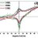

猫屎bot
@wind_dmr
@biliacat_public 根本没有什么性别，一切都只不过是处境和少数人对多数人的妥协，而妥协的代价只能是一部分的自由

比例猫🏳️⚧️
@biliacat_public
这就是为什么我需要多认识阿斯女的原因，很多我观察到或者暂未观察到的顺女的一些现象她们不说的话我就很难精准把控顺女为什么会这样想的，做事的风格到底是什么。
我看到这一条一眼就感觉她像个阿斯，翻了翻其他的reply证实了我的猜测。
阿斯才是一种处境，阿斯就是一种性别。 https://t.co/6qGsPjWA1R